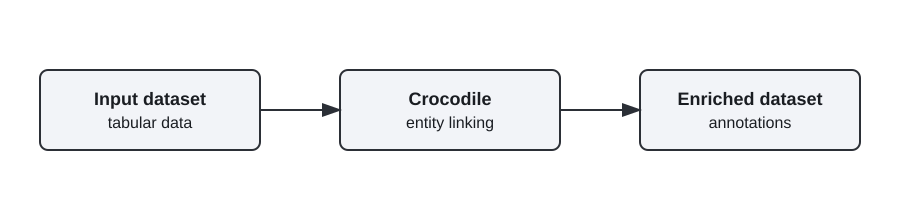

Crocodile is a Python library that performs entity linking over tabular data to support dataset enrichment and annotation. It connects cell values to canonical entities or knowledge base entries, helping improve data quality and enabling downstream analytics on enriched datasets.
The picture below shows the component in the DATAPACT architecture. 
Crocodile links entity mentions in tabular fields to canonical entities or knowledge bases, enriching datasets with standardized identifiers and metadata. This supports evaluation workflows and improves annotation consistency and quality across representative data samples.
n/a
| Organisation (s) | License Nature | License |
|---|---|---|
| SINTEF | Open Source | Apache-2.0 |
| What (types) | How(Process) | Values |
|---|---|---|
| Accuracy and usefulness of automated dataset enrichment and annotation | Evaluation on representative subsets of DATAPACT datasets, using expert review and comparison against baseline enrichment approaches without Crocodile | Crocodile-generated annotations should achieve at least 75% agreement with expert-reviewed annotations on evaluated samples, and demonstrate a minimum 10% relative improvement in annotation quality compared to baseline enrichment approaches |
| Project Links |
|---|
| Software GitHub Repository --> Crocodile software https://github.com/enRichMyData/crocodile |
See the external repository for installation instructions: https://github.com/enRichMyData/crocodile
See the external repository README and docs: https://github.com/enRichMyData/crocodile
See usage instructions in the external repository: https://github.com/enRichMyData/crocodile
n/a
n/a
n/a